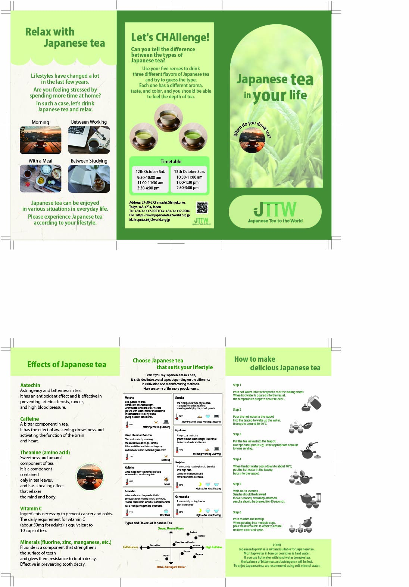

「お茶の魅力をたくさんの人に」
三つ折りパンフレットデザイン

Overview
- 課題制作 制作全般
- 制作時期：2026年 5月
- 使用ツール：Illustrator Photoshop
Concept
このパンフレットでは、日本茶の魅力を海外の方にも分かりやすく伝えることを目的に制作しました。日本茶の種類や効能、淹れ方など多くの情報を掲載するため、見出しや色分けを用いて情報を整理し、三つ折りの流れに沿って自然に読み進められるレイアウトを意識しています。また、アイコンや写真を取り入れることで、英語を母語としない方でも視覚的に内容を理解しやすい構成としました。全体の配色には日本茶をイメージしたグリーンを基調に採用し、自然で落ち着いた雰囲気を表現しています。情報量が多くても読みやすいよう、文字の大きさや余白のバランスにも配慮し、視認性とデザイン性を両立したデザインを目指しました。